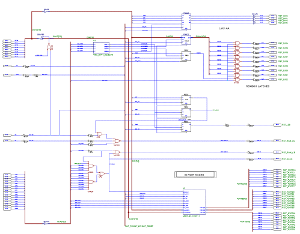
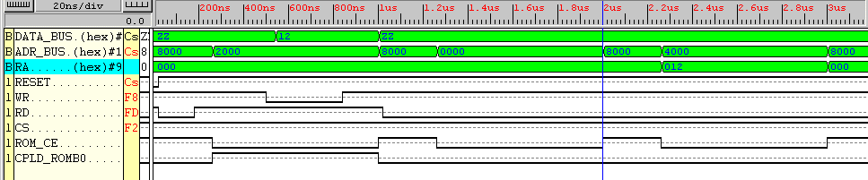
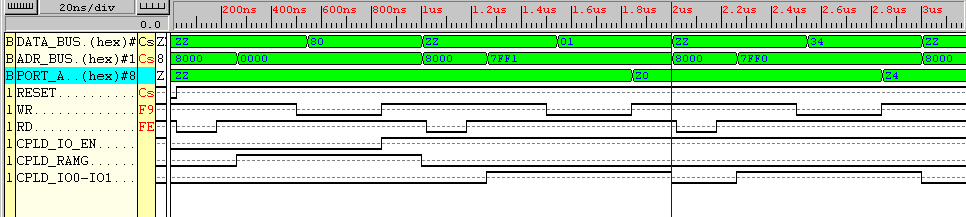

|
Design of a MBC5 like memory controller for the GameBoy implemented in a Xilinx XC9572 CPLD. |
|
|
Contents :
MBC5/CPLD
| Introduction | Any kind of information not fitting elsewhere. |
| The XC9572 CPLD | Description of the Xilinx CPLD | |
| I/O memory map | Non-MBC5 functionality stuffed into the CPLD. | |
| The CPLD design schematic | An attempt to reverse engineer the MBC5 | |
| Simulator screenshots | Included here for the curious minds. These are part of the design verification. |
| Control bus Signals & Timing | The read, the write etc... | |
| Gameboy memory map | Including the external memory banks. | |
| MBC5 | Specs, bank switching memory map & programming. |
| Index page | Main index |
| Downloads | ||
| Links & Credits | ||
| MBC5/CPLD INTRODUCTION |
What's here ? and
what's not...
On this page you'll basically find what i
needed of information before and during the implementation of
the CPLD design schematic. The page layout
probably resembles what could be found in a paper
notebook, but thats the way i used this page
myself.
As a consequence, a lot of information is
very likely not included here, either because i didn't need
to have it written down, or because it were
just as easy to get on the internet. You are welcome to ask
questions though :-)
Use the 'contents' list below as the base
for reading on. This page does not pretend to be user friendly,
so go wild here....
If you are unfamiliar with the Gameboy HW
& SW, and want to know more, then i recommend the links section (!)
GAMEBOY and/or GBC ?
The gameboy referenced on this page is my
Pocket Gameboy which can be regarded as a first generation
gameboy running of 4MHz. I have no experience
with a second generation color gameboy (4/ 8 MHz) and
none of the information here intend to cover
the GBC at all.
Yet.
MBC5 incompabilities in short
The CPLD design incorporates a complete MBC5
functional block, and can replace a original MBC5 controller in
all respects,
- exept when writing to the RAMG (RAM enable/disable)
register which now includes additional functionality (see below).
- exept that the ROM chip enable must be
taken from the CPLD ROM_CE output instead of A15 if
I/O is used, as the I/O
steals memory cells from ROM space.
I/O
The CPLD have 25 pins left over from the
MBC5 emulation, and these pins are thus available for I/O. The current
layout
is :
24 bits
I/O from a total of 16 possible memory adresses. The actual layout is determined
when the
CPLD programming file
is generated together with a given I/O block defining memorymap and I/O
registers.
With the XC9572 CPLD there
is very limited room for sophisticated I/O functionalities once the MBC5
part is
in place.
LED
Controlled from RAMG register. Visual debug/trap/i'm alive indicator.
It would be trivial to expand the memory capabilities
beyond the native MBC5 limits of 8MByte/128kByte for
ROM respectively RAM sizes, but it isn't
implemented at present. The cost would be an I/O pin for each
two-fold increase in either of the memory
spaces.
POWER
Approx. 70 mA. It would be nice if it were
possible to power the CPLD down, but it would be at the expense
of some strange logic levels at the output
ports.
Never mind, lets say the whole thing is not
very suited for normal battery usage for the time being...
| CPLD DESIGN - THE XC9572 CPLD |
The XC9572 is an ISP (in system programmable)
CPLD chip housed in a a 84pin PLCC package.
Pros and cons : Sucks a lot of juice and
makes glue logic design a complete thrill.
See Links
& Credits for a link to the Xilinx website containing the XC9572.
ISP, in-system programming
The ISP is done via an JTAG (boundary scan)
interface. To build an simple JTAG interface yourself
see Andrew March in the links section. He
has a page dedicated to a simple PC parallel port JTAG
interface, software as well as hardware.
Enough of that.
| CPLD DESIGN - I/O MEMORY MAP |
The CPLD chip have 24 pins free for i/o in
the basic design here, how they are used can easily be
modified given a specific application. So
far a basic layout with three byte-wide i/o ports are tested.
| I/O Configuration 1 | WRITE - Output ports and CPLD register(s) | READ - Input ports |
| 0x7FF3 - 0x7FFF | Free | Free |
| 0x7FF2 | PORTB B[7:0] | PORTC C[7:0] |
| 0x7FF1 | PORTA DDR (Note1) | Free |
| 0x7FF0 | PORTA A[3:0] if enabled via DDR (Note2) | PORTA A[7:0] |
Three 8bit ports occupy 3 of the 16 i/o adresses,
all nescessary decoding
of the internal i/o registers are housed
in the CPLD.
Note1
PORTA DDR, data direction register for PORTA[3:0}:
DDR[0] = 1 PORTA[3:0] are outputs.
(They will be present in a PORTA read)
DDR[0] = 0 PORTA[3:0] are inputs.
Note2
Data written to port A are always latched
internally in the CPLD. The DDR[0] bit only determines
the PORTA[3:0] direction.
| CPLD DESIGN - SCHEMATIC |
The CPLD JTAG programming file is generated
from a standard looking electronics schematic
drawing made in the Xilinx Foundation software
package.
There are two major parts, emulation of the
original MBC5 chip and i/o. There is no textual
description here of the functionalities that
makes up a MBC5, and the same goes for the
implementation of the i/o. You will have
to dig all out for yourself from the chapters below
and from browsing through the references.
Xilinx mbc5/cpld schematic.
See downloads section for a readable postscript
file of the schematic. The gates and registers
which can be identified below are all part
of the MBC5 emulation, the I/0 resides in a modular
macro block (lower right corner).

| CPLD DESIGN - SIMULATOR SCREENSHOTS |
Simulator Screenshot #1
Defining switchable rom
bank and reads from fixed and switchable banks :
Initial state is reset.
Cycle 1 : Set switchable
bank : ROMB0 is set to 0x12 with a write into 0x4000.
ROMB1 is not programmed and contains 0x00 from the initial reset.
Cycle 2 : Read fixed
: A ROM read from fixed ROM bank 0x0000 - the resulting adress is 0x 0
0000 0000.
Cycle 3 : Read switchable
: A ROM read from switchable ROM bank 0x4000 - the flash rom adress uses
RA = 0x12
Output : ROM read @ 1.25
us uses a RA = 0x000 but the one @ 2.25 us uses a RA = 0x012

Figure Simulator Screenshot #1
(rom_bank)
Simulator Screenshot #2
A write to port A after
initial setups : (I/O configuration #1)
Initial state is reset.
Cycle 1 : I/O Enable
I/O
space is enabled in upper part of switchable ROM bank with a write setting
RAMG[7] = 1 (Data 0x80 latched at 820us)
Cycle 2 : DDR = output
A write to port A DDR at 0x7FF1 with 0x01. Output is low from reset. (Data
0x01 latched at 1.82us)
Cycle 3 : Port A write
A
write to port A at 0x7FF0 with 0x34. (Data 0x34 latched at 2.82us)
Output : Port A outputs a 0xZ4
as A[7:4] are always inputs.

Figure Simulator Screenshot #2
(i4o4_enable_outputs_wr)
| GAMEBOY - CONTROL BUS SIGNALS |
Name Cartridge pin
MBC5 pin
RD
Pin 4
?
Read enable. Bizarre i-comb-my-hair-with-a-machine-gun
non-standard normally low signal.
Only enters high state in write cycles. It
goes high after approx. 150ns. from machine cycle start
and it remains here 20-30 ns into the following
machine cycle.
The apparent result from a low RD
signal would normally be spurios reads from the RAM and/or
flash-ROM chips whenever there wasn't a write
cycle in progress. Two signals make the setup
work properly anyway, and that is the A15
line and the CS signal.
The A15 line always enters high state
during the first part of a machine cycle which inhibits the
ROM space in the lower 32k of the memory
map and selects the RAM memory space.
The happy news is that the RAM chip enable
(generated in the CPLD) uses the processor
CS signal, which like the A15
line are valid longer than it takes the micro to decide if it is going
to make a read or a write. The last thing
to note is that the A15 line is the last adress line to
change, that is the remainder of the adressbus
is valid before ROM would be selected by a low
A15. (The adress bus actually seems
to be 10000000 XXXXXXXX at each machine cycle start)
CS
Pin 5
?
Ram chip select. Also seen labeled MREQ
& RCS. Active low pulse on read & write access to both the
fixed (GB internal 0xC000-0xDFFF) and switchable
(on cart, 0xA000-0xBFFF) RAM banks.
Apparently a mirror of internal RAM is selected
at 0xE000-0xDDFF ?
Hooked directly to CS for the internal 8
kByte RAM.
Machine cycle start to CS is 220ns.
CLK Pin 2
N/A
Fosc/4 clock output (hi/lo). Note that CLK
is disabled (high level) while the micro is in HALT state (to save power).
(On my game this gives a very distinct look
with a 'square' signal consisting of a first part with the CLK running
and then a idle part with the micro HALT'ed.
The period is 17ms, or 59 Hz, which equals the video V-blank intr.)
CLK logical OR'ed with the RD
signal can fix the RD signal to make it behave like a descent normally
high level / active low control line. (like
WR).
CLK
is not used for bus timing here.
Z80 clock vocabulary
The original Z80 processor instructions consisted
of 1 to 5 machine cycles, each made up of 3,4 or 5
T-states which again equaled the processor
clock.
Instructions on the gameboy Z80 derivative
consists of 1,2 or 3 machine cycles, each made up of exactly 4
T-states which again equals the processor
clock. The CLK output can therefore be regarded as a machine
cycle clock... This is my version and i'll
stick to it untill somebody convince me otherwise :-)
| GAMEBOY - MEMORY MAP |
Description Hex Binary
Interrupt Enable Register
-----------------------------------------------------------------------------------------
FFFF
Internal RAM
-----------------------------------------------------------------------------------------
FF80
Empty but unusable for I/O
-----------------------------------------------------------------------------------------
FF4C
I/O ports
-----------------------------------------------------------------------------------------
FF00
Empty but unusable for I/O
-----------------------------------------------------------------------------------------
FEA0
Sprite Attrib Memory (OAM)
-----------------------------------------------------------------------------------------
FE00
Partial echo of 8kByte Internal RAM
(1)
-----------------------------------------------------------------------------------------
E000 11100000
00000000
8kByte Internal RAM
-----------------------------------------------------------------------------------------
C000 11000000
00000000
8kByte switchable RAM bank (Latched
via MBC5 pins "AA")
This is 17 bit wide in order to access
1MBit.
B BBBAAAAA AAAAAAAA
-----------------------------------------------------------------------------------------
A000 10100000
00000000
8kByte Video RAM
-----------------------------------------------------------------------------------------
8000 10000000
00000000
16kByte switchable ROM bank (Latched
to MBC5 pins "RA")
Bank 0-511 (The 0 bank here is a MBC5
speciality)
HLLLLLL
LLAAAAAA AAAAAAAA (64MBit)
(i/o resides in this bank, see below)
-----------------------------------------------------------------------------------------
4000
16kByte ROM
Bank 0
-----------------------------------------------------------------------------------------
0000
This table is extracted from Pan doc (rev 12-Mar-98)
(1) The internal RAM uses A14 = 1 for CE (and CS for /CE).
Where :
B : RAMB -
MBC5 RAM bank select bits
H : ROMB1 - MBC5 ROM high bank select
bits
L : ROMB0 - MBC5 ROM low bank
select bits
A : CPU generated adress
| GAMEBOY - MBC5 |
The original MBC5
See Ref 1 for the pin-out of the original
MBC5 chip.
The total number of signal pins on the original
MBC5 is 29, 8 bit databus, upper 4 bits of the adress bus,
9 bits for the ROM latch, 4 for the RAM latch
and 4 controls including reset.
Specs, the MBC5 memory sizes in short :
- ROM upto 64MBit (8MByte) divided
into 512 banks, each 16kByte.
- RAM upto 1MBit (128kByte)
divided into 16 banks, each 8kByte
Memory map for the MBC5/CPLD
MBC5 memory bank switching is obtained
by writing the high order adress mask for the
memory space in question into latches
memorymapped into the normal ROM adresses space
as given in the following list.
-----------------------------------------------------------------------------------------
0x5000
RAM Bank Register (RAMB)
Switchable RAM bank select (4 AA bits)
XXXX
BBBB
-----------------------------------------------------------------------------------------
0x4000
Upper ROM Bank Register (ROMB1)
Switchable ROM bank high select (9th
RA bit)
XXXX
XXXH
-----------------------------------------------------------------------------------------
0x3000
Lower ROM Bank Register (ROMB0)
Switchable ROM bank low select (First
8 RA bits)
LLLL
LLLL
-----------------------------------------------------------------------------------------
0x2000
External Extended Memory Register (RAMG)
(This is ram enable on original MBC5
with 0x0A)
7 6 5 4 3 2 1 0
| |
|
| | 1
= RAM write enable
| | 0
= RAM write inhibit
| |
| 1 = LED on
| 0 = LED off
|
1
= IO enable
0
= IO disable
-----------------------------------------------------------------------------------------
0x0000
After reset : RAMB = bank 0, ROMBx = bank
0, RAMG = 0, LED off and i/o disabled.
Programming, including I/O access
Note that read-back of the bank switching
registers are impossible, allthough it would have
been a nice opportunity. You'll have to keep
track yourself without any elegant read-modify-write
instructions.
C programming - GBDK
See the original GB.H which includes MBC5
capabilities. Note that this will work fine
with the cpld implementation here (as per
GBDK v 2.1.0). The RAMG register write
must be modified if you want to include the
I/O ports, both for the enable/disable switching
and for i/o read and writes. You can use
this MBC5CPLD.H include file.
Notice that lcc should define the MBC5 controller
with a 0x1A in cell 0x0147.
Assembler programming
If you can program in assembler you will
know what to do better than me :-)
Emulators
Obviously there is no emulators with support
of the cpld i/o so the only real option here is to
use big-bang testing on the real hardware.
There is no emulators with support of the
full 128kByte ram area.
Perhaps the full 1MByte rom area are supported
by emulators, i'll have to check that out...
| DOWNLOADS |
Xilinx schematic
MBC5 plots :
MBC5/CPLD plot file (as seen above)
- postscript file (150kByte) here
Macro : MBC5_BANK_SELECTS in pdf format
: mbc5_bank_selects.pdf
I/O Macro Subplots :
IO configuration #1 - 4 files zip'ed
here
| GAMEBOY - LINKS & CREDITS |
XILINX
Xilinx product short on the XC9572 at http://www.xilinx.com/products/xc9500.htm
Xilinx schematic of a parallel port JTAG cable http://www.xilinx.com/support/programr/files/0380507.pdf
GAMEBOY
Ref 1. The Number
One supplier of anything gameboy related, Jeff Frohwein
GameBoy Universe Center of Gravity : http://home.HiWAAY.net/~jfrohwei/gameboy/
Other fine people (i
remember to have ripped) (you can find them via GameBoy Universe
Center of Gravity)
Pan (the tech paper no 1) :
Andrew March (where i first saw the Xilinx CPLD) : http://www.icenet.com.au/~amarch/
Kashi (bus timings) : http://www.keisei.tsukuba.ac.jp/~kashima/games/gbread2e.html
The Karlsruhe project, Marc Rawer : http://www.fh-karlsruhe.de/fbnw/html/Gameboy/
People i forgot
i have ripped...
Thanks to you too :-) And please tell me...
People i didn't
rip (but having related sites)
Lukas ? An MBC in a Phillips PAL. http://pc1-archbo.bot.unibas.ch/~lukas/GBprojects/mbc.html
The Z80 processor, check out http://www.geocities.com/SiliconValley/Peaks/3938/z80_home.htm